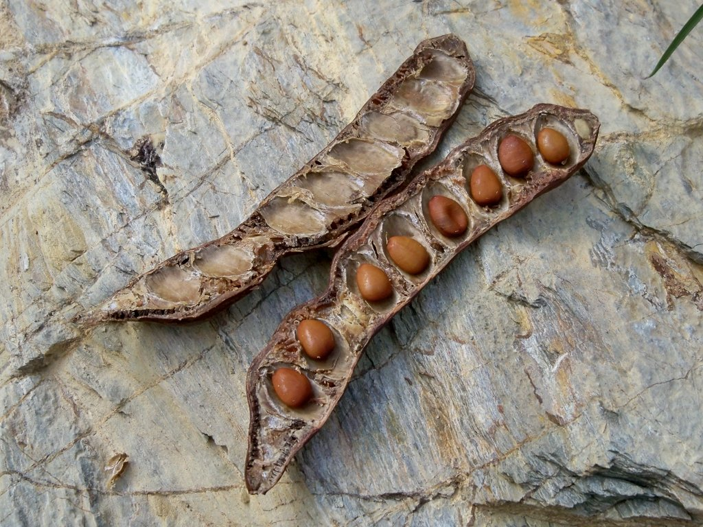
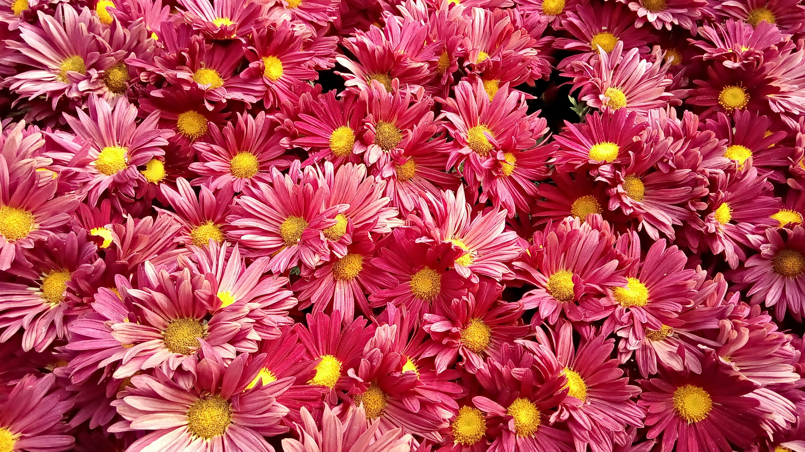

- "Teff" Various Types
- Finger Millet
- Ethiopian Plum
- Ethiopian Apple
- Killer Mushroom
Ensete Ventricosum
The chopped and grated pulp of the Ensete plant is fermented and made into a flour known as 'kocho'. A bread can be made using 100% kocho flour or a mixture of kocho and other cereal flours. It is said to taste like a good quality bread. Many Ethiopians depend completely or partially on kocho for a substantial part of their food.- Tom Robbins -
Ethiopian Organic Fruits & Veggies: Nutritional Powerhouses for WellnessSome Diseases
Veggie and Fruits
Prevents Diseases
Guava,Pomegranate and Figs
Beeturia
Carrots and Wild Berries
Carotenosis



Informative Info. on Fruits & Veggies
Ethiopian fruits and vegetables offer unique health benefits. For example, papayas boost the immune system with vitamin C and the enzyme papain. Mangoes promote skin health and immunity with vitamins A and C. Guavas enhance immunity and digestion due to their vitamin C and fiber content. Bananas support heart and muscle health with their potassium. Avocados, rich in healthy fats, provide holistic well-being with vitamin K, E, and folate. Pomegranates are packed with antioxidants for diverse health benefits. Oranges, lemons, limes, and imported berries are known for vitamin C and antioxidants. Apples, figs, and dates bring their own nutritional qualities to a balanced diet.
In Ethiopia's "Gibe" community, the embrace of organic vegetables is growing. Small-scale farmers are turning to sustainable methods, eschewing synthetic chemicals. They employ techniques like crop rotation, companion planting, and organic compost. Organic cabbage, for instance, is pesticide-free, ensuring safety for consumers. Similarly, organic carrots thrive without chemical fertilizers, offering higher nutrient levels. These practices boost soil fertility and preserve ecosystems. Furthermore, organic produce commands premium prices locally and globally, bolstering farmers' incomes. This shift to organic vegetables in the region brings environmental, health, and economic benefits to local farmers.